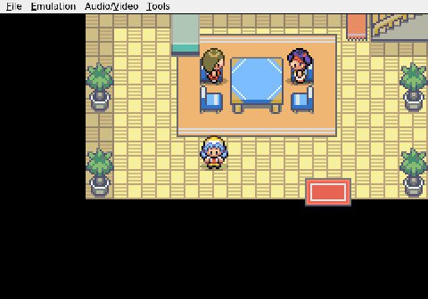
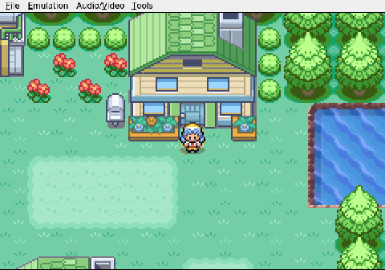
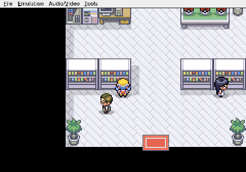
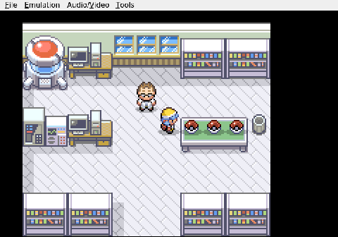

Gemini plays Pokemon Heart & Soul, Run 2
A Choice of Three
Gemini returns to Professor Elm's lab in New Bark Town to start its second Nuzlocke attempt in the randomized Johto of Pokemon Heart & Soul. Elm has a favor: carry something to Mr. Pokemon up the road. In exchange, the professor offers a Pokemon to keep the trainer alive on the way.


Three Pokeballs sit on a table near the back wall. The heavy randomization has shuffled the classic Johto starters out entirely. No Chikorita, no Cyndaquil, no Totodile. Instead, the first ball holds a Geodude—decent bulk, miserable type matchups. The second contains a Whismur, a fragile Normal-type import from Hoenn with little to recommend it this early. The third reveals Scyther, fast and sharp and dangerous from the jump.

Gemini works through them methodically, declining the first two just to see every option before committing to anything. It is a habit that suits a Nuzlocke, where a wrong pick stays wrong for the rest of the run.

And then the session stops. Gemini sits on the selection screen, cursor hovering over Scyther's ball, the prompt waiting for a answer. The bladed mantis is the obvious power pick, but obvious does not always mean safe. Geodude walls physical hits. Whismur is forgettable but carries no crippling weaknesses. Scyther hits hard and folds to a stray Rock Slide.

Whichever Pokemon leaves that lab will anchor the early team and set the strategy all the way to Violet City. For now, the choice hangs open, three balls on a table and a cursor that hasn't moved.
